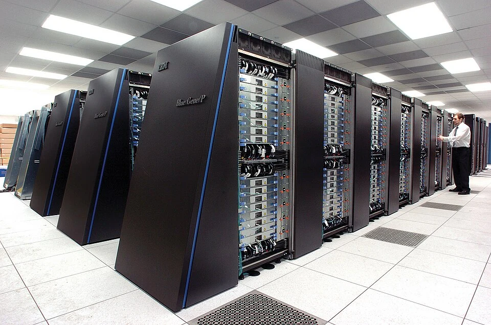
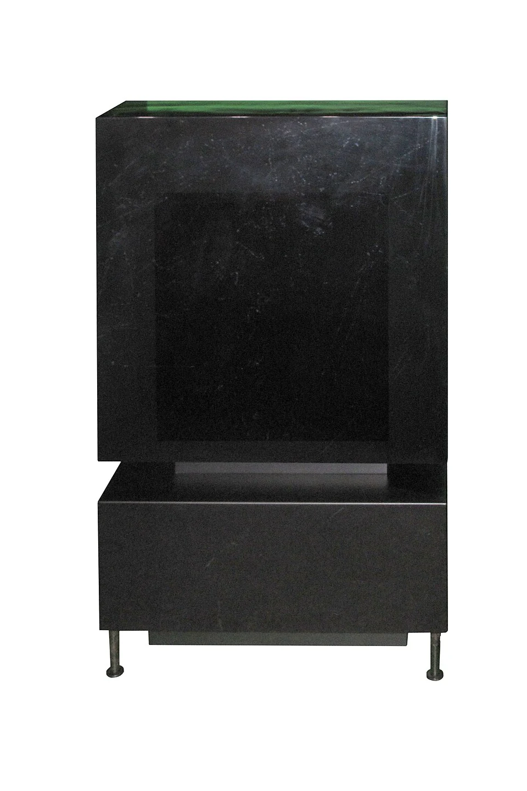
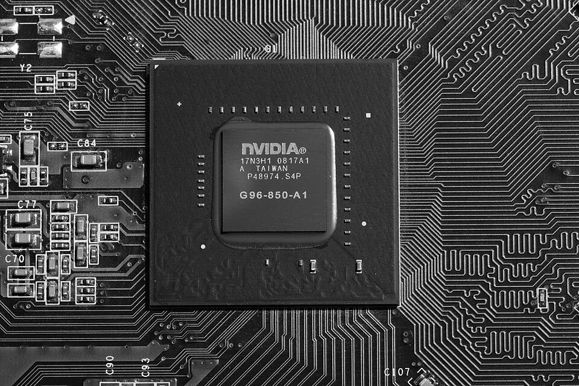
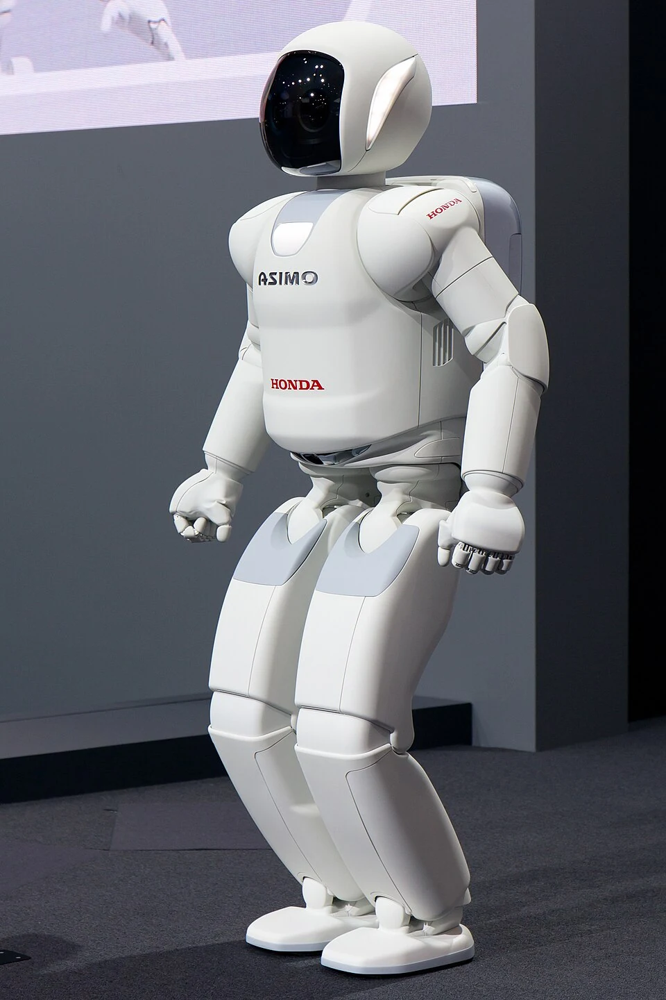
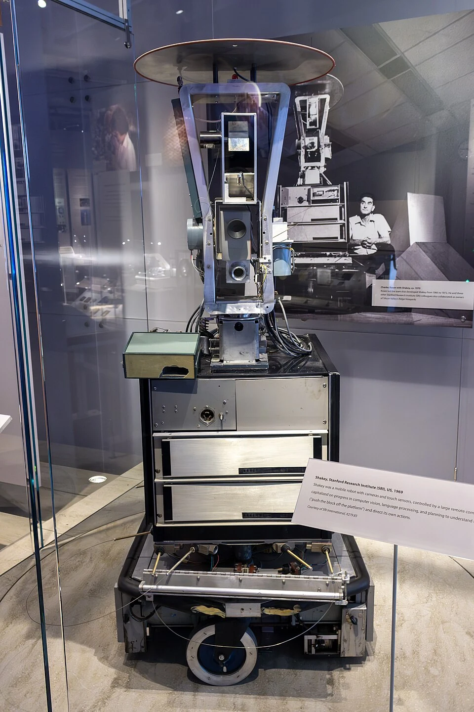

De seguir instrucciones a trabajar con conocimiento.
La quinta generación se relaciona con la inteligencia artificial, el razonamiento y el procesamiento paralelo. Su significado es menos uniforme que el de las etapas anteriores: describe objetivos de investigación además de avances del hardware.
Explorar esta generación
Un proyecto que dio nombre a una visión
En 1982, Japón inició el proyecto Fifth Generation Computer Systems. Su objetivo era desarrollar sistemas orientados al procesamiento de conocimiento, con programación lógica y computación paralela. El proyecto concluyó en 1992 y exploró máquinas capaces de realizar inferencias de forma eficiente.
Este proyecto histórico no equivale a toda la inteligencia artificial posterior. Ayuda a entender el nombre de la generación, pero las técnicas de aprendizaje actuales tienen múltiples orígenes. Tampoco existe acuerdo universal sobre una fecha exacta de inicio o una única tecnología que defina toda esta etapa.

De las reglas al aprendizaje
Un sistema basado en reglas utiliza conocimientos y relaciones definidos explícitamente. En el aprendizaje automático, un modelo ajusta parámetros a partir de ejemplos para detectar regularidades. Son enfoques distintos que pueden combinarse y que sirven para problemas diferentes.
Una red neuronal artificial es un modelo matemático; no es una copia completa del cerebro humano. Puede reconocer patrones en imágenes, texto o sonido, pero su desempeño depende de los datos, el diseño y la evaluación. Aprender patrones tampoco garantiza comprender o razonar correctamente en cualquier situación.

Más formas de interactuar
El procesamiento del lenguaje natural estudia cómo analizar y generar lenguaje humano. La visión por computadora busca extraer información de imágenes, y la robótica combina percepción, planificación y acción. Estas áreas amplían las maneras de dar instrucciones y recibir ayuda de una máquina.
Entre sus aplicaciones están la transcripción, la clasificación de documentos, la traducción y la detección de objetos. Son tareas delimitadas: un sistema puede ser muy competente en una y fallar en otra. Conviene distinguir un resultado convincente de un resultado comprobado.

Capacidad, límites y responsabilidad
El procesamiento paralelo distribuye operaciones entre varias unidades y es importante para muchos cálculos de inteligencia artificial. Aun así, no todos los problemas se aceleran de la misma forma: dividir el trabajo exige coordinar datos y resultados. El software y la arquitectura importan tanto como la cantidad de componentes.
Los sistemas pueden producir errores, reproducir sesgos o tratar datos sensibles de forma inadecuada. Por ello, evaluar resultados y mantener supervisión humana es parte de su uso responsable. La historia continúa con una pregunta abierta: cómo diseñar computadoras que sean útiles, comprensibles y confiables.

¿Qué distingue históricamente a la quinta generación?
Elige una respuesta y comprueba lo que aprendiste.